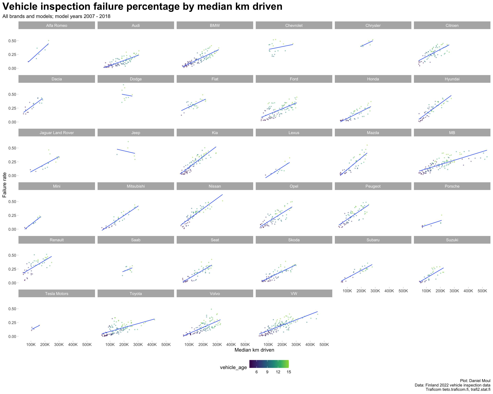

Table 2.1: Minimum and maximum falure rates considering all (model_year, brand, model)
model_year
brand
model
inspection_count
failure_rate
failure_reason_1
2009
Dodge
CALIBER
171
0.6725
Rear axle
2017
Suzuki
SWIFT
172
0.0000
Not provided
Here I start using vehicle_age instead of model_year, because it’s a more natural way of thinking about the association with failure rate.
While there are strong correlations among model year, km driven (average or median), and failure rate (Figure 2.1 and Table 2.2), keep in mind that differences among groups in model_year (also expressed as vehicle_age) and median_km_driven mean that summary statistics and rankings may be misleading. See Chapter 3 Modeling failure rate.
Figure 2.2: Four views of inspection failure data (brands)
The most linear relationship is failure rate by vehicle age (Figure 2.3 panel B), which helps to explain the difference between the corresponding simple linear models (Table 3.2).
Figure 2.3: Inspection failure rates by distance driven and vehicle age
Linear regression plots by brand reveal differences in the failure rates of the brands:
Points closer to zero on the Y axis indicate brands that are are more reliable at that particular distance driven.
Lines closer to zero on the Y axis indicate brands that are are more reliable at any distance driven
Lines with lower slope indicate brands that are more reliable as cars are driven farther.
Show the code
data_for_plot <- dta_working_setmodel_year_range <-glue("{min(data_for_plot$model_year)} - {max(data_for_plot$model_year)}")data_for_plot |>ggplot() +geom_point(aes(median_km_driven, failure_rate, group = brand, color = vehicle_age, size = inspection_count),na.rm =TRUE, size =0.5, alpha =0.4,show.legend =TRUE) +geom_smooth(aes(median_km_driven, failure_rate, group = brand),method ="lm", formula ='y ~ x', se =FALSE, linewidth =0.5,show.legend =FALSE) +scale_x_continuous(labels =label_number(scale_cut =cut_short_scale())) +scale_color_viridis_c(end =0.85,breaks =3*1:5) +#c(4, 8, 12, 16)) +scale_size_continuous(range =c(1, 10)) +expand_limits(y =0) +facet_wrap(~ brand) +theme(legend.position ="bottom") +labs(title ="Vehicle inspection failure percentage by median km driven",subtitle =glue("All brands and models; model years {model_year_range}"),x ="Median km driven",y ="Failure rate",caption = my_caption )

Figure 2.4: Inspection failures by distance driven faceted by brand
Considering vehicles of each model year as a group, what was the failure rate for each brand? The same brands are not in the top or bottom five each year although some brands do appear often (Figure 2.5).
Show the code
data_for_plot <- dta_working_setmodel_year_range <-glue("{min(data_for_plot$model_year)} - {max(data_for_plot$model_year)}")data_for_plot |>mutate(brand =reorder_within(brand, -failure_rate, model_year)) |>ggplot(aes(failure_rate, brand, group = brand, color = brand)) +geom_boxplot(varwidth =TRUE,na.rm =TRUE,show.legend =FALSE) +scale_y_reordered() +expand_limits(y =0) +facet_wrap(~ model_year,scales ="free_y") +theme(legend.position ="bottom") +labs(title ="Ranked brands by failure rate for each model year",subtitle =glue("All brands and models; model years {model_year_range}"),x ="Failure rate",y =NULL,caption = my_caption )
Figure 2.5: Ranked brands by failure rate boxplot faceted by model year
Considering vehicles of each brand over all years, what are the brands’ failure rate trends (Figure 2.6)?
Show the code
data_for_plot <- dta_working_setmodel_year_range <-glue("{min(data_for_plot$model_year)} - {max(data_for_plot$model_year)}")data_for_plot |>ggplot(aes(vehicle_age, failure_rate, color = model_year, group = model_year)) +geom_boxplot(varwidth =TRUE,outlier.size =0.5,na.rm =TRUE,show.legend =FALSE) +scale_color_viridis_c(end =0.85) +facet_wrap(~ brand) +theme(legend.position ="bottom") +labs(title ="Ranked brands by failure rate for each model year",subtitle =glue("All brands and models with at least 3 model years; model years {model_year_range}"),x ="Vehicle age",y ="Failure rate",caption = my_caption )
Figure 2.6: Failure rate boxplot by model year for each brand
Failure rates vary to a surprising amount within most brands when plotted against vehicle age (Figure 2.7).
Show the code
data_for_plot <- dta_working_setmodel_year_range <-glue("{min(data_for_plot$model_year)} - {max(data_for_plot$model_year)}")data_for_plot |>ggplot(aes(vehicle_age, failure_rate, color = model, group = model)) +geom_point(size =0.5, alpha =0.4,show.legend =FALSE) +geom_smooth(method ="lm", formula ='y ~ x', se =FALSE, linewidth =0.5,show.legend =FALSE) +facet_wrap( ~ brand) +theme(legend.position ="bottom") +labs(title ="Vehicle inspection failure percentage by vehicle age for each model",subtitle =glue("All brands and models with at least 3 model years; model years {model_year_range}"),x ="Vehicle age",y ="Failure rate",caption = my_caption )
Figure 2.7: Failure rates for each model by vehicle age faceted by brand
The differences in Figure 2.7 within brands are due in part to some models being driven more than others. The differences within brands (while still noticeable) are not as large when plotted against distance driven (Figure 2.8).
Show the code
data_for_plot <- dta_working_set |>mutate(median_km_driven_k = median_km_driven /1000)my_breaks <-seq(from =0, to =max(data_for_plot$median_km_driven_k), by =100)model_year_range <-glue("{min(data_for_plot$model_year)} - {max(data_for_plot$model_year)}")data_for_plot |>ggplot(aes(median_km_driven_k, failure_rate, color = model, group = model)) +geom_point(size =0.5, alpha =0.4,show.legend =FALSE) +geom_smooth(method ="lm", formula ='y ~ x', se =FALSE, linewidth =0.5,show.legend =FALSE) +scale_x_continuous(breaks = my_breaks) +facet_wrap( ~ brand) +theme(legend.position ="bottom") +labs(title ="Vehicle inspection failure percentage by model_year by median km driven",subtitle =glue("All brands and models with at least 3 model years; model years {model_year_range}"),x ="Median km driven (K)",y ="Failure rate",caption = my_caption )
Figure 2.8: Failure rates for each model by distance driven faceted by brand